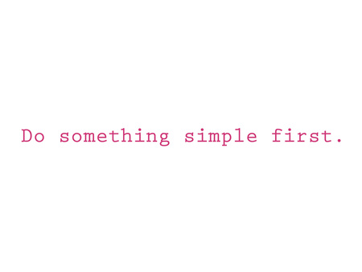
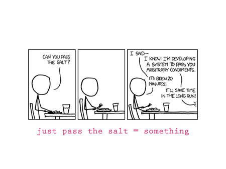
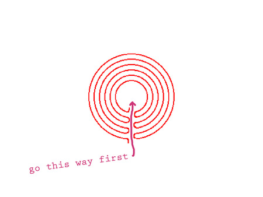
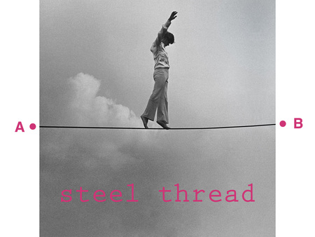
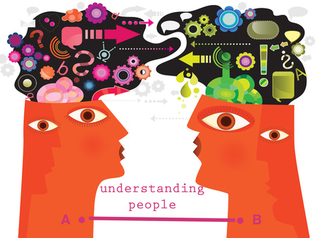
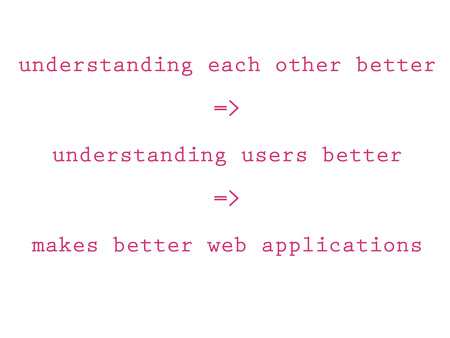
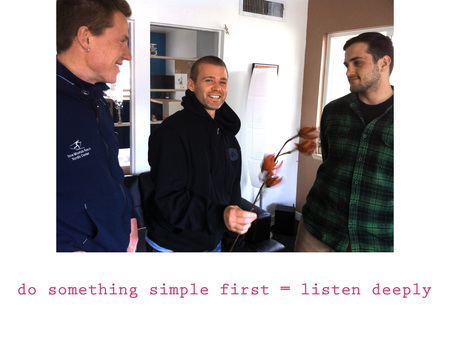
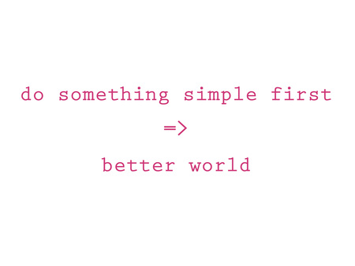

We were just invited to be one of the presenters at the ShareLab event the CMKY Festival. The event used open space technology to engage the question: Can we design a world that is workable for 100% of humanity? As a presenter, dojo4 was asked to bring a "provocation" that would address one model or practice that we believe is revolutionizing our work and contributing to a better world.
Hmm, good question! And provocative indeed! I talked to the partners here about it and what easily floated to the top as the most crucial practices we believe are revolutionizing our work and contributing to a better world are: Do Something Simple First and Listen Deeply.
And so this is what I offered as a provocation at the ShareLab:

People often say that at dojo4 we design and build software for the internet. But that's not actually what we do. What we do is help solve problems for people. Most often we use technology and design as tools for engaging these problems. But really, the most cogent way to describe what we do is that we help solve problems for people by doing something simple first.
Let me break down what I mean by that...
First of all: do! That means taking a can-do attitude. It doesn't mean sit around and think about it for another week. It means approaching problems with a sense of achieving something. So the next question is what is this "something"?

"Something" is probably what's right in front of you. It's the thing that's needed right now. For instance, a prospective client walks into dojo4 with this problem: "We don't have the salt and we want the salt." At that point, "do something" is passing them the salt. We don't need to build them a catapult for vaulting the salt over to their side of the table and we don't need to develop an algorithm for how long it will take to get the salt to them by various methods of salt passing. What we need to do is use the most basic tools to get them the salt, which is most likely going to mean using our hands and arm muscles to push the salt across to them.
We pass the salt in the most basic way possible, being sure not to elaborate unnecessarily.
Doing something truly simple is the most powerful and elegant work we do. And so this is always the first approach to take.

Avoiding getting lost in the maze, by taking the most straightforward and simple path first, underlies one of the principles of software engineering that serves us well: the steel thread. A steel thread indicates the most important path of execution in a computer system. It focuses on only on what is fundamental to a system and shuns added or auxiliary possibilities and uses.

By doing something simple first we are able to draw the most sturdy steel thread through from the inception of a problem, or entry to a system, all the way to its solution or conclusion.
What we've found is that the system that underlies all the technical and design problems that we encounter is the interrelation of people. The essential system is a human framework. And we've found that the first thing we can do simply in this system is to try to understand each other more clearly.

A steel thread that we can draw through the problems that arise in the human system is to try to understand people better. And in order to understand clients and users better, we have to understand ourselves and each other better. Unquestionably, this approach has the potential of spinning off many beneficial results, but at the very least it allows us to design and build better web applications.

One of the practices or tools that we use at dojo4 to understand ourselves and each other better is to have a weekly standup that cultivates our ability to ask compelling questions and to listen deeply. We take turns asking one question every week that might allow us to understand ourselves and each other better, and refines our capacity for actually, really listening.

We use a loose circle practice as this tool, but there are many methods and practices that do the trick. The main point is that we've found that it's important to core of our business and our work in the world to understand people better. And we can best do this by sticking to two related fundamentals: do something simple first and listen deeply.

This thanks to Ara and Justin and my other cohorts at dojo4 for conversations about what we can do and already do to make a better world.